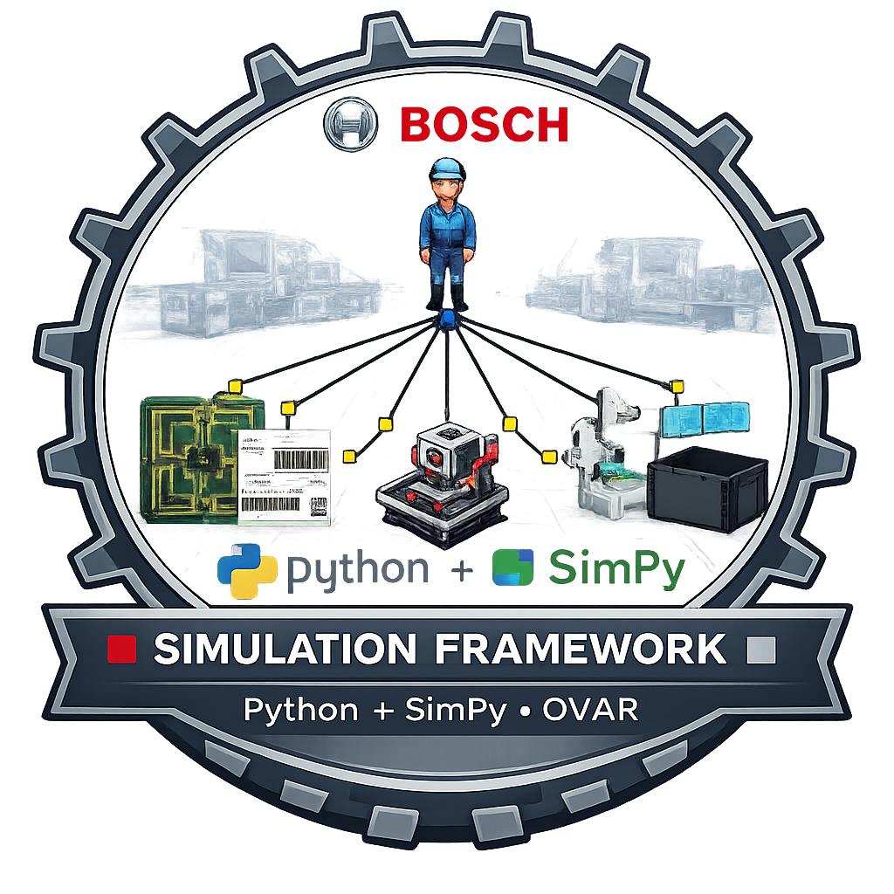
Simulation Framework
This project was developed as part of my Master's thesis and focuses on a discrete-event simulation framework for evaluating human-machine collaboration in industrial assembly cells. The goal was to model real Bosch production lines, test alternative configurations safely, and support engineering decisions before making changes on the factory floor.
Overview
At its core, this project is a configurable simulation framework for industrial assembly cells. It gives the user a visual way to build the line, assign operators and machines, import measured timings, validate the logic of the model, run what-if scenarios, and export the resulting KPIs without rewriting the simulation each time.
The main focus is the framework itself: a reusable tool for exploring production-system behavior, not just a one-off model tied to a single experiment. The Bosch case study then acts as the proof that the framework can represent a real line and support useful decisions.
Visual line building
Assemble production flows on a canvas instead of coding every scenario from scratch.
Measured time modeling
Fit process durations to imported real values so the model stays grounded in data.
Scenario experimentation
Test operator changes, automation ideas, and layout alternatives in a safe digital environment.
Model validation
Check the model structure before execution so invalid flows are caught early.
KPI extraction
Generate throughput, cycle time, utilization, value-added time, and cost-related outputs.
Reusable structure
Keep the tool modular enough to support other lines and future digital-twin evolution.
Technical Stack
Introduction
From factory uncertainty to testable decisions
A thesis about turning human-machine collaboration into something engineers can explore, question, and improve before touching the real line.
Industrial assembly lines increasingly depend on how work is divided between human operators, automated equipment, and collaborative robots. The real challenge is not only building that mix, but understanding whether a change will actually improve flow, flexibility, and efficiency. This thesis was built around that exact question.
Developed inside Bosch Ovar
The work was grounded in Bosch Security Systems, where multiple assembly lines with different automation levels create a strong real industrial testbed.
Focused on decision support
The goal was not just to simulate a line, but to build a framework that helps answer practical setup questions with data-backed scenario testing.
Built for what-if exploration
Engineers should be able to ask what happens if an operator moves, a cobot is added, or a route changes, and see the likely effect before making the real change.
State of the Art
The literature review positioned the framework at the intersection of Industry 4.0, human-robot collaboration, digital twins, and simulation-driven decision support. The goal was not to cover every topic exhaustively on this page, but to extract the concepts that directly shaped the tool.
Industry 4.0
Interoperability, virtualization, modularity, decentralization, and real-time capability frame the need for smart production tools that react quickly to change.
Human-Robot Collaboration
Humans bring adaptability and decision-making, while cobots are strong in repetitive, precise, and ergonomically difficult operations performed in safe shared workflows.
Digital Twin Direction
A simulation model is a practical stepping stone toward a digital twin, enabling virtual experimentation, validation, and future live-data integration.
Why SimPy
The framework leans on open-source tooling to keep logic transparent, configurable, and easier to adapt than heavier closed platforms with steeper setup overhead.
Development
The framework was developed around four main concerns: a modular simulation architecture, a visual modeling workflow, configurable statistical inputs, and exportable logs for KPI analysis. The objective was to keep the tool practical for industrial scenario building, not just technically correct.
Architecture and responsibilities
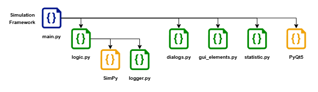
Simulation Core
SimPy drives the discrete-event behavior. Pieces move through sources, buffers, processes, and targets while competing for operators and equipment as shared resources.
Qt Interface
The GUI lets the user add elements, place them on a canvas, connect flows, assign operators, and manage multiple scenarios without writing code.
Time Modeling
Processing, loading, unloading, and transport durations are modeled through normal distributions based on imported measurements or manually defined parameters.
Validation
Before each run, the model is checked for missing links, incomplete definitions, and logical issues so bad scenarios are caught before execution.
Logging and KPIs
Every run produces structured outputs that support throughput, cycle time, utilization, value-added time, and financial calculations.
Known Limits
The thesis intentionally kept fatigue modeling, ergonomic analysis, live dashboards, and real failure data outside the final implementation scope.
Interface walkthrough
Where the full factory model comes together
This is the main window of the application and the visual center of the whole framework. It is where the production line is laid out, inspected, edited, and prepared for validation or execution.
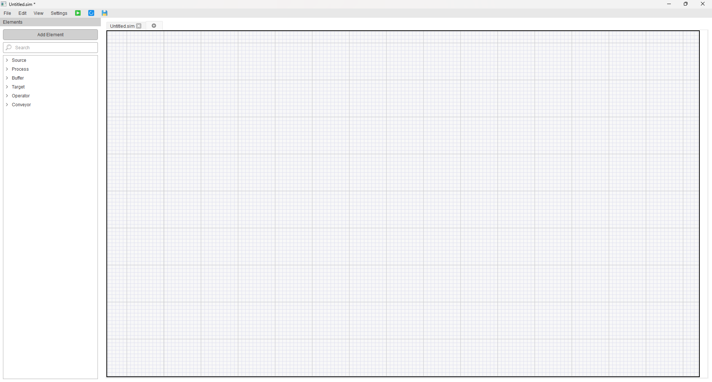
Quick actions for save, validate, and run
The toolbar keeps the core actions close at hand, which makes iterative scenario work much faster when you are constantly adjusting and testing the model.
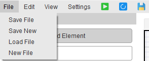
The dialog where each element gets its behavior
Each process, buffer, source, or operator can be configured from this dialog, making the model feel like a real tool instead of a hard-coded prototype.
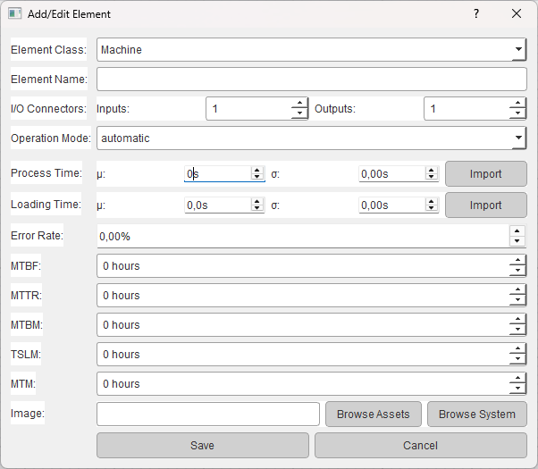
Import real timings instead of guessing them
Real timings can be pasted directly into the framework so process distributions are built from observed values instead of rough manual guesses.
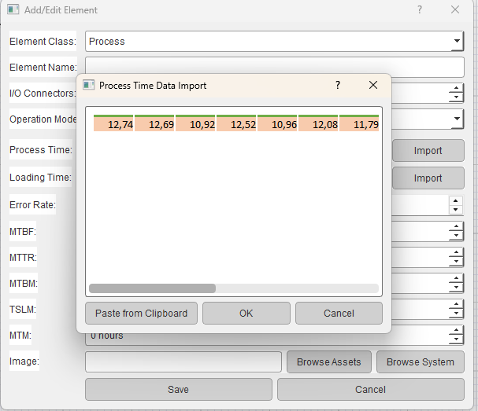
A clear green light before the run begins
Before a run starts, the framework confirms the model is structurally consistent so the user can trust the scenario setup.
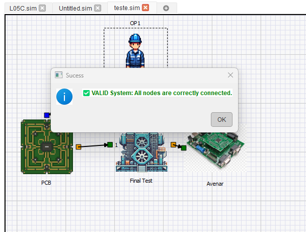
Errors are explained before they become wasted runs
Invalid logic is surfaced immediately with specific feedback, which helps fix broken paths or missing parameters before wasting time on a failed run.
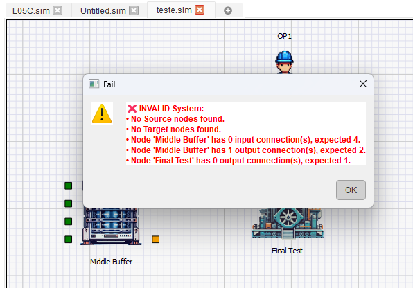
Operational and financial assumptions in one place
Runtime and economic assumptions are defined here, linking operational simulation results with the cost-benefit analysis presented later in the thesis.
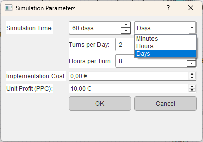
Workflow inside the tool
Create elements
Define sources, buffers, processes, targets, and operators.
Build the flow
Place components on the canvas and connect the production path.
Load times
Import measured values and fit distributions for each operation.
Validate
Check the model structure before launching the simulation.
Run scenarios
Set global runtime, profit, and cost assumptions for each study.
Compare outputs
Use the exported logs and dashboards to study bottlenecks and gains.
Case Study
The framework was applied to Bosch assembly lines for the Avenar fire detector. Two line configurations were modeled to compare a more automated reference line against a simpler and more manual alternative, then a new cobot-based improvement scenario was tested on top of the manual line.
L05C: the automated reference line
L05C was modeled first as the high-automation reference scenario. Its structure is more parallel, more synchronized, and closer to the real Bosch setup used for validation. That made it the best line for checking whether the framework could reproduce real throughput and cycle-time behavior with enough fidelity to be trusted.
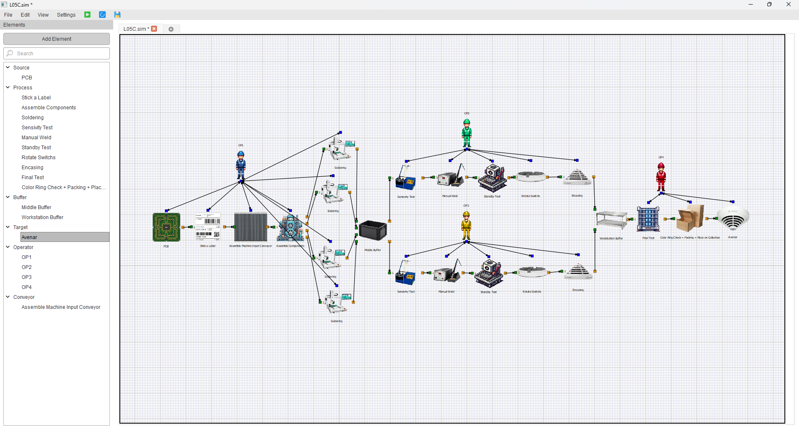
Full model of the L05C line, showing its more automated and parallel production structure.
L05B: the manual line used for improvement studies
L05B represents a more manual and linear configuration, with fewer automation points and stronger dependence on operator pacing. This was the line where bottlenecks became more obvious, which is exactly why it became the base for the later L05B/V2 cobot improvement scenario.
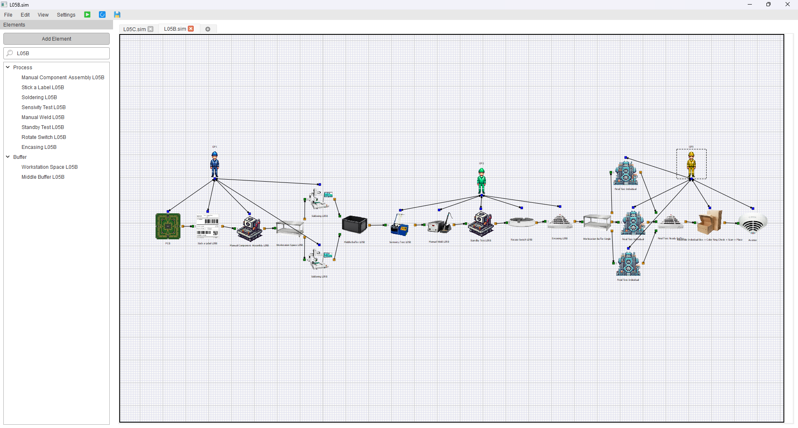
Full model of the L05B line, used to expose structural waiting time and evaluate later changes.
How the framework was used
I mapped the real process steps, grouped them into line segments, assigned measured times to each operation, validated the baseline models against Bosch data, and then introduced a cobot-centered scenario to compare operational and financial outcomes.
Results
The baseline models were first checked against real production data, then the improved L05B/V2 scenario was evaluated. The main takeaway is that the framework was accurate enough to support scenario testing, while also making the key bottlenecks visible.
Validated reference line with only about 5.4% deviation from real data.
Manual baseline with strong buffer accumulation and lower flow efficiency.
Improved scenario after cobot integration and task redistribution.
The improved line reduced average cycle time from 34.76 to 29.17 seconds.
| Scenario | Throughput | CTmed | Value-Added Time | Main Reading |
|---|---|---|---|---|
| L05C | 158.48 pcs/h | 22.72 s | 113.79 s per piece | Balanced automated reference line used for validation. |
| L05B | 103.56 pcs/h | 34.76 s | 120.84 s per piece | Manual line with severe middle-buffer congestion. |
| L05B/V2 | 123.40 pcs/h | 29.17 s | 103.67 s per piece | Partial automation improved rhythm, throughput, and payback potential. |
One of the clearest changes appeared in the buffers. In the baseline L05B model, the middle buffer averaged 1970.46 seconds per piece and dominated utilization. In L05B/V2 that same area dropped to 810.31 seconds, showing that the cobot-centered sequence removed a large share of the structural waiting time even if the line was still not fully balanced.
Validation quality
The simulation matched Bosch data closely enough to be useful in practice: around 5.4% deviation for L05C and around 9% for the more human-dependent L05B line.
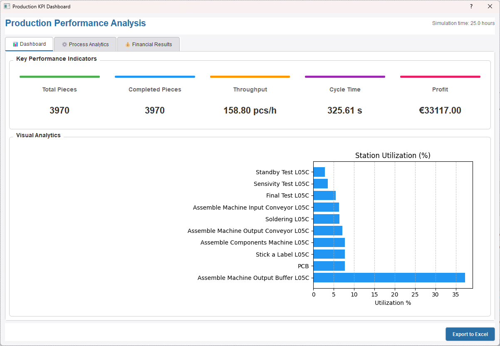
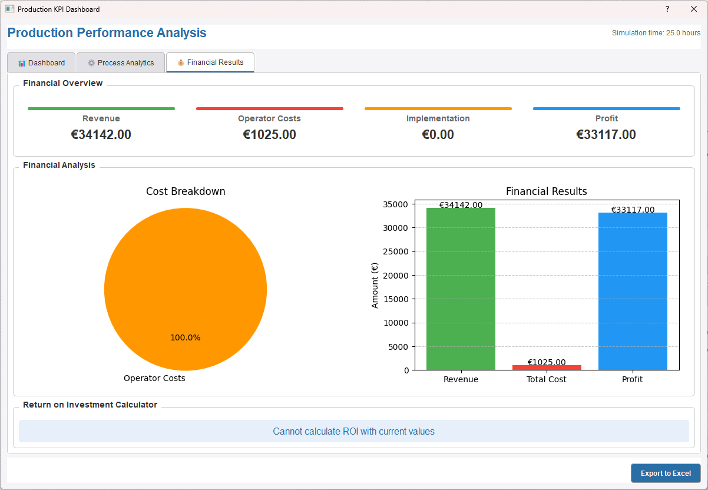
Conclusion
The thesis delivered a lightweight but practical simulation framework capable of modeling real assembly-cell behavior and supporting structured what-if analysis. It proved especially useful for comparing manual and hybrid scenarios without interrupting production, and it showed that targeted automation can produce meaningful gains when it is applied to the right bottlenecks.
At the same time, the work also made the next steps clear. Richer ergonomic modeling, operator variability, live factory data integration, and stronger built-in analytics would move the tool closer to a fuller digital-twin workflow. Even in its current state, though, the project already works as a solid decision-support foundation for future industrial improvement studies.
Project Links
Open the full dissertation, check the presentation, or head back to all projects.